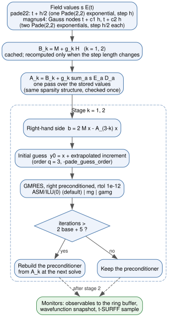
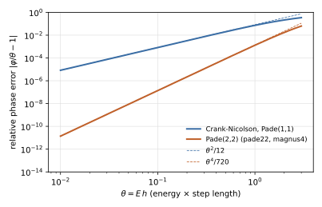

Time Propagation
After the eigensolver has produced the initial state, TDSE-Z integrates the
semi-discrete time-dependent Schrödinger equation from \(t = 0\) to
FinalTime. This page describes the time parameters, the three propagators,
the linear solvers they use and how to choose a time step.
Time Parameters
Key |
Type |
Default |
Description |
|---|---|---|---|
EnablePropagation |
bool |
1 |
Run the time propagation. With 0 the run stops after the eigensolver and the static output. |
TimeStep / TimeStepSize |
real |
0.01 |
Time step \(h\) (atomic units). Must be positive. |
FinalTime / TotalTime |
real |
100.0 |
End of the propagation (atomic units). Must be positive. |
Propagator |
string |
|
|
Preconditioner |
string |
|
|
MGLevels |
int |
0 |
Number of multigrid levels for |
MGSmooth |
int |
1 |
Smoothing sweeps before and after each coarse correction
( |
The propagation ends exactly at FinalTime: the last step is shortened when
FinalTime is not a multiple of TimeStep.
Equation of Motion
The Galerkin discretisation in the B-spline basis gives
with the mass (overlap) matrix \(\mathbf M\), the field-free Hamiltonian
\(\mathbf H\) (kinetic energy, potential and, with EnableCAP = 1, the
complex absorbing potential, added to \(\mathbf H\) before the first step),
the position matrices \(\mathbf D = (\mathbf D_x, \mathbf D_y, \mathbf
D_z)\) of the axes in Polarization and the carrier charge
\(q\) = Charge (Physics Conventions). Every propagator advances
Eq. (39) by solving sparse systems of the form
with a complex shift \(g\) proportional to the step length. All three schemes are unitary for a Hermitian \(\mathbf H_E\) (no CAP).
Propagators
Propagator selects the scheme.
cn(default)Crank-Nicolson [Crank1947], the (1,1) Padé approximant of the step exponential, run through the PETSc
TSobject (TSTHETAwith \(\theta = 1/2\), linear problem) [PETSc]. Second order, one solve per step with \(g = i h/2\). Standard PETSc-ts_*options apply.pade22Exponential midpoint rule with the (2,2) Padé approximant
(41)\[R_{22}(z) = \frac{1 + z/2 + z^2/12}{1 - z/2 + z^2/12}, \qquad z = -i h\,\mathbf M^{-1}\mathbf H_E(t + h/2) .\]The numerator has the roots \(-3 \pm i\sqrt3\), so \(R_{22}\) factorises into two Cayley-type stages, each unitary,
(42)\[(\mathbf M + g_k\,\mathbf H_E)\,\mathbf y_k = (\mathbf M + \bar g_k\,\mathbf H_E)\,\mathbf y_{k-1}, \qquad g_{1,2} = \frac{h\,(\mp\sqrt3 + 3i)}{12}, \qquad k = 1, 2 ,\]with \(\mathbf y_0\) the state at \(t\) and \(\mathbf y_2\) the state at \(t + h\). Two solves per step. The scheme is fourth order in the field-free phase and second order in the time dependence of the field.
magnus4Commutator-free fourth-order Magnus integrator [BlanesMoan2006] [Alvermann2011],
(43)\[\mathbf U = \exp\!\big(h(a_1\mathbf A_1 + a_2\mathbf A_2)\big)\, \exp\!\big(h(a_2\mathbf A_1 + a_1\mathbf A_2)\big), \qquad \mathbf A_j = -i\,\mathbf M^{-1}\mathbf H_E(t + c_j h),\]with the Gauss nodes \(c_{1,2} = 1/2 \mp \sqrt3/6\) and \(a_{1,2} = (3 \mp 2\sqrt3)/12\). Since \(a_1 + a_2 = 1/2\), each factor is a half step with an effective field \(2(a_2\mathbf E_1 + a_1\mathbf E_2)\) (applied first) and \(2(a_1\mathbf E_1 + a_2\mathbf E_2)\), evaluated with Eq. (42). Fourth order overall, four solves per step.
At start-up the rational propagators print their configuration, and at the end the number of stage solves and the mean number of GMRES iterations per solve.
Linear Solver
Every system Eq. (40) is solved with GMRES
[Saad1986] (restart 30, or 50 above \(10^5\) unknowns; at most 1000
iterations) to a relative residual of \(10^{-12}\). The preconditioner is
applied from the right, so the stopping test acts on the true residual of the
original system whatever the preconditioner. The default preconditioner is
restricted additive Schwarz [CaiSarkis1999] with one subdomain per rank and
ILU(0) on each subdomain. -tdsez_ilu_levels n sets another ILU fill level;
in measurements ILU(1) saved at most one iteration in 2D and none in 3D, while
its factorisation was about 10 times slower in 3D (degree 4).
The preconditioner is built from the operator of the first step and reused
(refresh below). The solves use a non-zero initial guess; for pade22 and
magnus4 it is extrapolated from previous steps (below).
Rational propagators. The stage matrices of Eq. (42) are assembled with the following structure (Fig. 7):
\(\mathbf B_k = \mathbf M + g_k\mathbf H\) is cached and recomputed only when the step length changes (first step, shortened last step).
\(\mathbf A_k = \mathbf B_k + g_k\,s\,\mathbf E\cdot\mathbf D\) is formed in one pass over the stored values when all matrices share the same sparsity structure (checked once), otherwise by matrix additions.
Since \(\bar g_1 = -g_2\), the right-hand side of stage \(k\) is \(2\mathbf M\mathbf x - \mathbf A_{3-k}\mathbf x\).
Each stage solve starts from its input \(\mathbf x\) plus the stage increment \(\boldsymbol\delta = \mathbf y - \mathbf x\) extrapolated from the last \(q\) steps,
(44)\[\mathbf y^{(n)}_{\text{init}} = \mathbf x^{(n)} + \sum_{j=1}^{q} (-1)^{j-1}\binom{q}{j}\,\boldsymbol\delta^{(n-j)} ,\]with \(q\) =
-pade_guess_order(1 to 5, default 3);-pade_extrapolate_guess 0starts from \(\mathbf x\) instead.The two stage solvers carry the options prefixes
pade_stage1_andpade_stage2_(for example-pade_stage1_ksp_rtol,-pade_stage2_pc_type).


Fig. 7 One step of pade22 (magnus4 performs it twice with half the step
length). The field-free parts of the stage matrices are cached, the field
term is added in one pass, and each stage solve starts from an
extrapolated guess and reuses the preconditioner until the refresh test
triggers a rebuild.
Preconditioner refresh. For a strong field the operator drifts away from
the one the preconditioner was built from. The first solve after each build
sets a reference iteration count \(n_0\); a solve that needs more than
\(2n_0 + 5\) iterations causes the preconditioner to be rebuilt from the
current operator at the next solve. This applies to every propagator and
preconditioner. In a 2D test with a field of 2 a.u. and \(h = 0.2\),
a fixed preconditioner needed 4, 13, 24, 65, 249 and 641 iterations in
successive steps and then failed; with the refresh the run converges with
4 to 8 rebuilds. cn prints the number of rebuilds at the end of the run.
Preconditioners
Preconditioner selects the preconditioner of every propagator solve. The
outer solve always uses the full operator and the same tolerance, so the
choice changes the cost, not the result.
asm(default)Restricted additive Schwarz, one subdomain per rank, ILU(0) subdomain solves.
mgGeometric multigrid on the B-spline space inside flexible GMRES (requires
Basis = bspline). Each coarse level drops every other simple interior knot of each axis (repeated knots, such as C0 interfaces, are kept), as long as each axis keeps at least \(p+1\) spans and two spans per rank. The coarse spaces are therefore nested in the fine one and the prolongation is exact knot insertion, applied axis by axis as a tensor product and checked at set-up on a linear function. Coarse operators are Galerkin products \(\mathbf P^T\mathbf A\mathbf P\). Each level is smoothed byMGSmoothRichardson sweeps with ASM/ILU(0) before and after the coarse correction; the coarsest level (below 2000 DOFs, or afterMGLevelslevels) is solved by LU with MUMPS when PETSc provides it.gamgPETSc algebraic multigrid (smoothed aggregation) inside flexible GMRES. Its default Chebyshev/Jacobi smoothing needed 218 to 279 iterations on this complex operator in 2D. Use it with the ASM/ILU(0) smoother, as
benchmarks/preconditioners/run.shdoes:-mg_levels_ksp_type richardson -mg_levels_ksp_max_it 1 -mg_levels_pc_type asm -mg_levels_sub_pc_type ilu(with thepade_stage1_/pade_stage2_prefixes for the rational propagators).
PETSc options with the solver prefix (-mg_levels_*, -mg_coarse_*;
-pade_stage1_*, -pade_stage2_*) override these defaults.
Gauss-Seidel/SOR smoothing is not used for mg: on degree-5 splines it
needed 14 to 26 iterations on one rank (60 to 80 on four) against 1 to 4 with
ILU smoothing, in line with the known degree dependence of standard smoothers
for B-spline discretisations.
Case |
|
|
|
|---|---|---|---|
2D, p = 5, 40k DOFs, |
3-7 |
2-4 |
1.4-1.8 |
same, \(h\) = 0.2 |
4-11 |
2-6 |
1.3-1.7 |
2D variable mass / Coulomb / no CAP, 8 ranks |
6-13 |
3-5 |
1.1-1.5 |
3D, p = 3, 110k DOFs, |
6-8 |
4 |
1.2 |
Preconditioner |
its / solve |
set-up |
solve time / step |
|---|---|---|---|
|
7 |
1.1 s |
0.089 s |
|
4 |
1.7 s |
0.158 s |
|
4 |
5.7 s |
0.134 s |
Multigrid needs fewer and more uniform iterations, but on up to 12 ranks of one machine each V-cycle costs more than the iterations it saves. It is intended for large rank counts, where one-level ASM degrades because it has no coarse space; measure both on the target machine.
Other PETSc and PetIGA preconditioners. Any PCType can be selected per
stage solver (-pade_stage1_pc_type X -pade_stage2_pc_type X). The
following timings were taken with pade22, 8 ranks and \(h = 0.05\),
without the extrapolated initial guess; the ranking does not depend on it.
|
3D, p = 3, 32k DOFs, 40 steps |
2D, p = 4, 14k DOFs, 100 steps |
|---|---|---|
|
4.5 s, 5.5 its |
0.65 s, 5.0 its |
|
– |
0.63 s, 3.3 its |
|
9.0-9.3 s, 25 its |
1.5-1.6 s, 19 its |
|
40 s, 91 its |
6.8 s, 95 its |
|
50 s, 320 its |
9.5 s, 238 its |
|
69 s, 222 its |
7.2 s, 102 its |
|
not converged in 1000 its |
not converged, also with |
igaebe and igabbb [Dalcin2016] invert one small dense block per
element or per basis function (overlap \(p/2\) by default). They damp
local error like a multigrid smoother but have no global coupling, so on their
own they need hundreds of iterations or stall. Block Jacobi, GASM and ICC lack
the overlap of ASM and need about four times as many iterations.
Accuracy is independent of the preconditioner. The largest relative
difference of the same 2D run (100 pade22 steps) from a run with an exact
LU solve (MUMPS) is:
Preconditioner |
dipoles |
energies |
currents |
populations |
autocorrelation |
|---|---|---|---|---|---|
|
1.3e-11 |
8.1e-13 |
1.3e-12 |
1.3e-12 |
6.0e-13 |
|
2.0e-11 |
1.8e-12 |
3.9e-12 |
2.3e-12 |
9.7e-13 |
The norm drifts by \(8\times10^{-14}\) over the run. These differences are far below the time-step and grid errors (about \(10^{-5}\) on validation grids).
Cost of the GMRES solves. Orthogonalisation takes 1-2 % of a solve; the rest is preconditioner applications (ILU triangular solves, about 60 %) and matrix-vector products. The cost is reduced by fewer iterations:
the extrapolated initial guess Eq. (44) (default \(q = 3\)) lowers the mean from 5.5 to 4.1 iterations per solve in 3D and from 5.0 to 3.4 in 2D;
a looser tolerance,
-pade_stage1_ksp_rtol 1e-11 -pade_stage2_ksp_rtol 1e-11, saves another 10-13 % and changes the outputs by about \(5\times10^{-11}\).
Pipelined GMRES (-pade_stage1_ksp_type pgmres, likewise for stage 2)
overlaps the global reduction of each iteration with the next product. On one
machine a reduction costs microseconds through shared memory and the extra
vector work dominates: time stepping was 20-35 % slower (3D, 8 ranks, same
4.1 iterations per solve). It may pay off across many nodes, where reductions
cross the network. It does not remove load imbalance (MPI Notes).
Strong fields. With \(\tau = |g|\) the operator is
\(\mathbf M + i\tau(\mathbf H + s\,\mathbf E\cdot\mathbf r)\), where
\(\tau = h/2\) for cn, \(h/\sqrt{12}\) for pade22 and
\(h/(2\sqrt{12})\) for magnus4. When \(\tau\max|\mathbf
E\cdot\mathbf r|\) exceeds about 1.5 the field term dominates and the operator
behaves like an indefinite Helmholtz operator that the coarse levels of
multigrid cannot represent: in 2D tests mg needed 3-18 iterations up to
1.5 and diverged at 3, where asm still converged (5-33 iterations). With
Preconditioner = mg TDSE-Z estimates \(\tau\max|\mathbf
E\cdot\mathbf r|\) over the pulse and the box at set-up and prints a warning
above 1.5. Typical strong-field runs (\(E \le 0.2\) a.u.,
\(h \le 0.05\), box \(\le 100\) a.u.) stay well below this value.
Choosing a Time Step
For an eigencomponent of energy \(E\) the exact step multiplies the coefficient by \(e^{-i\theta}\), \(\theta = Eh\). The rational approximants reproduce the modulus exactly and the phase approximately:
Crank-Nicolson also scales the group velocity of a component by \(1/(1 + \theta^2/4)\), which slows fast electrons; the Padé(2,2) propagators remove this error to fourth order (Fig. 8).


Fig. 8 Relative phase error of the field-free step, Eq. (45), as a function of \(\theta = Eh\). Dashed lines: leading terms \(\theta^2/12\) and \(\theta^4/720\).
In practice:
choose \(h\) so that \(E_{\max} h\) is small for the highest energy that matters (the cut-off of the photoelectron or harmonic spectrum), and so that the field period and envelope are well resolved;
with
pade22ormagnus4a much larger step reaches the same accuracy: on the free-packet t-SURFF benchmark (Photoelectron Spectra (t-SURFF), \(T = 40\))pade22with \(h = 0.025\) reaches a spectrum error of \(1.2\times10^{-6}\), against \(3.3\times10^{-4}\) forcnwith \(h = 0.0125\);magnus4is fourth order also in the time dependence of the field, at twice the cost per step ofpade22;confirm convergence by repeating the run with \(h/2\) and comparing the observables of interest.
Propagation Control and Progress
With EnablePropagation = 0 the run ends after the eigensolver, which is
useful to check eigenvalues and eigenstates (Eigensolver) before a long
propagation. With EnablePropagation = 1 the propagation starts from the
state selected by InitialState (Initial State).
The monitor prints a progress line with the step, the elapsed fraction, the time, the squared norm \(\langle\psi|\mathbf M|\psi\rangle\) and the total energy (Observables):
[ 10/ 2000] 0.5% t= 0.1000 <Psi|Psi>= 1.000e+00 <H>= -5.0000e-01
With Verbose = 1 (default) a line is printed every step; with
Verbose = 0 about twenty lines are printed over the run.
Without a CAP the norm is conserved to the solver tolerance by all three
propagators. With EnableCAP = 1 it decreases as the CAP absorbs outgoing
flux; the decrease is the absorbed probability.
Troubleshooting
- A stage solve does not converge
The error
Pade(2,2) stage k solve did not convergestops the run.Check whether the field is strong for the chosen step (\(\tau\max|\mathbf E\cdot\mathbf r| > 1.5\), see above); reduce
TimeStepor usePreconditioner = asm.
- Norm not conserved without a CAP
Check that
EnableCAP = 0.Check the GMRES convergence with
-pade_stage1_ksp_converged_reason(-ksp_converged_reasonforcn).
- Missing or zero time series
Check
PhysicsOutput(Output Control): quantities not listed are written as zeros.